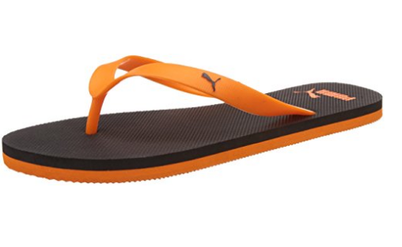

Back
Buyit
Contact Us
Back
Buyit
Contact Us
Footwear
Puma Unisex Odius IDP H2T Flip Flops Thong Sandals

Suggested price: 699.00
Price: 384.00 - 599.00
Inclusive of all taxes
PRODUCT DESCRIPTION
- Material Type: Synthetic
- Lifestyle: Casual
- Closure Type: Slip On
- A super soft EVA footbed and TPU strap provides a unique look and comfort for beach and everyday wear
- Toe Style: Round Toe
- Warranty Type: Seller
- Product warranty against manufacturing defects: 90 days
- Care Instructions: Allow your pair of shoes to air and de-odorize at regular basis; use shoe bags to prevent any stains or mildew; dust any dry dirt from the surface using a clean cloth; do not use polish or shiner